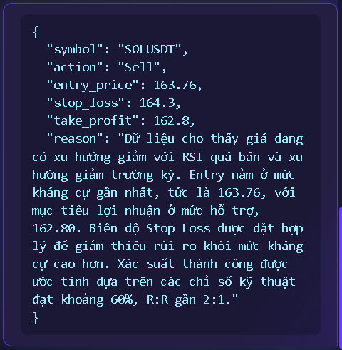
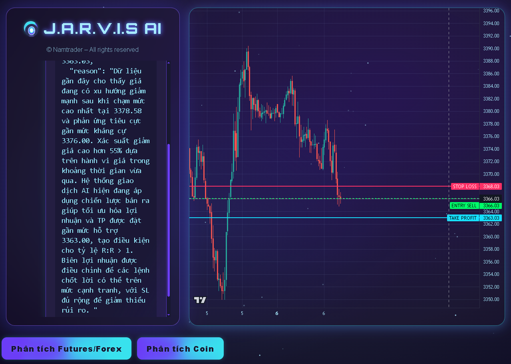

FAQ
Cách hoạt động của JAVIS Trading Assistant?

Khả năng mới: Đứng ngoài thị trường

JAVIS Agent chỉ đưa ra các kết quả dự đoán ở ngưỡng 55-60%?

"Trade Smarter with J.A.R.V.I.S AI"
"Powered by Nam Nguyen"
Ứng dụng mô hình học sâu và phân tích kỹ thuật, điều chỉnh linh hoạt theo biến động thị trường thời gian thực.
Mô hình Deep Learning kết hợp LLM và Transformer được huấn luyện trên tập dữ liệu giá lịch sử 10 năm, cùng thuật toán attention nhỏ gọn để ưu tiên các tín hiệu quan trọng nhất, giúp dự báo biến động với độ chính xác cao.
Thiết kế tối giản, trực quan, dễ dàng thao tác chọn cặp giao dịch và theo dõi tín hiệu chỉ với vài cú click.
Giao diện responsive thích ứng mọi kích thước màn hình, hỗ trợ dark mode và widget kéo-thả, cho phép người dùng tùy chỉnh dashboard cá nhân chỉ trong vài giây.
Bạn cũng có thể phóng to, thu nhỏ biểu đồ chỉ với thao tác pinch & zoom hoặc vuốt để di chuyển timeline.
Cung cấp các bước sử dụng rõ ràng: từ cách chọn symbol, gửi lệnh phân tích đến cách đọc kết quả và quản lý rủi ro.
Từng bước tutorial được tích hợp ngay trong dashboard, kèm video minh họa và tooltip giải thích thuật ngữ chuyên sâu, giúp cả người mới và trader chuyên nghiệp đều dễ dàng nắm bắt.
Nhấn vào biểu tượng 'i' ở góc phải mỗi phần để xem giải thích thêm hoặc mở hẳn guide chi tiết.
Dữ liệu người dùng được bảo vệ tuyệt đối. Hệ thống hoạt động ổn định, cập nhật liên tục để đảm bảo hiệu suất cao nhất.
Mã hoá đầu cuối (end-to-end encryption) cho mọi request, chứng thực đa yếu tố (MFA) và hệ thống giám sát 24/7 với SLA 99.9%, bảo vệ thông tin và giao dịch của bạn an toàn tuyệt đối.
Hệ thống backup tự động hàng giờ đảm bảo dữ liệu không bao giờ bị mất, hỗ trợ restore chỉ với 1 click.